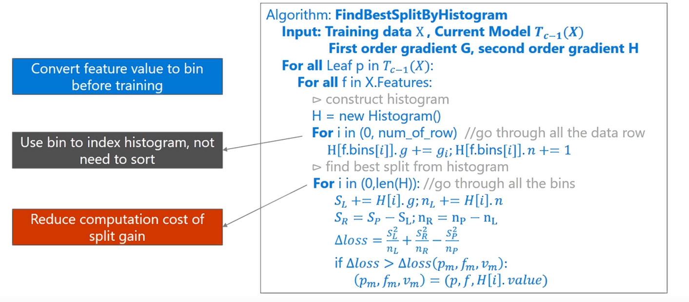

本文介绍LightGBM，它是一款常用的GBDT工具包，由微软亚洲研究院（MSRA）进行开发，在Github上开源的三天内收获1000 star。其速度比XGBoost快，并且精度也相当的不错。
接下来看看其算法的内容。
注意其设计理念：
单个机器在不牺牲速度的情况下，尽可能多地用上更多的数据；
多机并行的时候，通信的代价尽可能地低，并且在计算上可以做到线性加速。
于是其使用分布式 GBDT，选择了基于 histogram 的决策树算法。
直方图算法
回顾一下XGBoost中的Exact greedy算法：
对每个特征都按照特征值进行排序
在每个排好序的特征都寻找最优切分点
用最优切分点进行切分
这个算法比较精确，但是缺点明显：
空间消耗大。需要保存数据的特征值。XGBoost采用Block结构，存储指向样本的索引，需要消耗两倍的内存。
时间开销大。在寻找最优切分点时，要对每个特征都进行排序，还要对每个特征的每个值都进行了遍历，并计算增益。
对Cache不友好。使用Block块预排序后，特征对梯度的访问是按照索引来获取的，是一种随机访问，而不同特征访问顺序也不一样，容易照成命中率低的问题。同时，在每一层长树的时候，需要随机访问一个行索引到叶子索引的数组，并且不同特征访问的顺序也不一样，也会造成较大的Cachemiss。
使用直方图算法进行划分点的查找可以很好的克服这些缺点。
PS: XGBoost不是有Cache aware access优化么？但是看LightGBM的对比实验，还是直方图的快。
直方图算法
直方图算法(Histogram algorithm)的做法是把连续的浮点特征值离散化为k个整数（其实又是分桶的思想，而这些桶称为bin）比如[ 0 , 0.1 ) → 0 , [ 0.1 , 0.3 ) → 1 [0,0.1) \rightarrow 0,\ [0.1,0.3) \rightarrow 1 [ 0 , 0 . 1 ) → 0 , [ 0 . 1 , 0 . 3 ) → 1
同时，将特征根据其所在的bin进行梯度累加 。这样，遍历一次数据后，直方图累积了需要的梯度信息，然后可以直接根据直方图，寻找最优的切分点。
其算法大致描述如下：

仔细看上面的伪代码，相信你有几个问题：
如何将特征映射到bin呢？即如何分桶？
如何构建直方图？直方图算法累加的g是什么？
构建完直方图如何找最优特征，有用到二阶信息么？
如何分桶呢？
首先，在读取数据后，就决定每个特征如何分桶。（在feature_group.h文件中，FeatureGroup 的其中一个构造函数）
那么如何分桶呢？对于数值型特征和类别特征采用不同的做法。
数值型特征
对于数值型 的特征，关键是寻找分割点，关键代码如下，其中max_bin为最大bin的数量：
1 2 3 4 5 6 7 8 9 10 11 12 13 14 15 16 17 18 19 20 21 22 23 24 25 26 27 28 29 30 31 32 33 34 35 36 37 38 39 40 41 42 43 44 45 46 47 48 49 50 51 52 53 54 55 56 57 58 59 60 61 62 63 64 65 66 67 68 69 70 71 72 73 74 75 76 77 78 79 80 81 82 83 84 85 std ::vector <double > GreedyFindBin (const double * distinct_values, const int * counts, int num_distinct_values, int max_bin, size_t total_cnt, int min_data_in_bin) std ::vector <double > bin_upper_bound; CHECK(max_bin > 0 ); if (num_distinct_values <= max_bin) { bin_upper_bound.clear(); int cur_cnt_inbin = 0 ; for (int i = 0 ; i < num_distinct_values - 1 ; ++i) { cur_cnt_inbin += counts[i]; if (cur_cnt_inbin >= min_data_in_bin) { auto val = Common::GetDoubleUpperBound((distinct_values[i] + distinct_values[i + 1 ]) / 2.0 ); if (bin_upper_bound.empty() || !Common::CheckDoubleEqualOrdered(bin_upper_bound.back(), val)) { bin_upper_bound.push_back(val); cur_cnt_inbin = 0 ; } } } cur_cnt_inbin += counts[num_distinct_values - 1 ]; bin_upper_bound.push_back(std ::numeric_limits<double >::infinity()); } else { if (min_data_in_bin > 0 ) { max_bin = std ::min(max_bin, static_cast <int >(total_cnt / min_data_in_bin)); max_bin = std ::max(max_bin, 1 ); } double mean_bin_size = static_cast <double >(total_cnt) / max_bin; int rest_bin_cnt = max_bin; int rest_sample_cnt = static_cast <int >(total_cnt); std ::vector <bool > is_big_count_value (num_distinct_values, false ) for (int i = 0 ; i < num_distinct_values; ++i) { if (counts[i] >= mean_bin_size) { is_big_count_value[i] = true ; --rest_bin_cnt; rest_sample_cnt -= counts[i]; } } mean_bin_size = static_cast <double >(rest_sample_cnt) / rest_bin_cnt; std ::vector <double > upper_bounds (max_bin, std ::numeric_limits<double >::infinity()) std ::vector <double > lower_bounds (max_bin, std ::numeric_limits<double >::infinity()) int bin_cnt = 0 ; lower_bounds[bin_cnt] = distinct_values[0 ]; int cur_cnt_inbin = 0 ; for (int i = 0 ; i < num_distinct_values - 1 ; ++i) { if (!is_big_count_value[i]) { rest_sample_cnt -= counts[i]; } cur_cnt_inbin += counts[i]; if (is_big_count_value[i] || cur_cnt_inbin >= mean_bin_size || (is_big_count_value[i + 1 ] && cur_cnt_inbin >= std ::max(1.0 , mean_bin_size * 0.5f ))) { upper_bounds[bin_cnt] = distinct_values[i]; ++bin_cnt; lower_bounds[bin_cnt] = distinct_values[i + 1 ]; if (bin_cnt >= max_bin - 1 ) { break ; } cur_cnt_inbin = 0 ; if (!is_big_count_value[i]) { --rest_bin_cnt; mean_bin_size = rest_sample_cnt / static_cast <double >(rest_bin_cnt); } } } ++bin_cnt; bin_upper_bound.clear(); for (int i = 0 ; i < bin_cnt - 1 ; ++i) { auto val = Common::GetDoubleUpperBound((upper_bounds[i] + lower_bounds[i + 1 ]) / 2.0 ); if (bin_upper_bound.empty() || !Common::CheckDoubleEqualOrdered(bin_upper_bound.back(), val)) { bin_upper_bound.push_back(val); } } bin_upper_bound.push_back(std ::numeric_limits<double >::infinity()); } return bin_upper_bound; }
上述的代码找到了数值型特征取值的各个bin的切分点，即bin_upper_bound，之后只需要根据这个对特征的取值查找其相应的bin中即可（用二分搜索）。
类别特征
对于类别 特征来说，主要代码如下：
1 2 3 4 5 6 7 8 9 10 11 12 13 14 15 16 17 18 19 20 21 22 23 24 25 26 27 28 29 30 31 32 Common::SortForPair<int , int >(counts_int, distinct_values_int, 0 , true ); if (distinct_values_int[0 ] == 0 ) { if (counts_int.size() == 1 ) { counts_int.push_back(0 ); distinct_values_int.push_back(distinct_values_int[0 ] + 1 ); } std ::swap(counts_int[0 ], counts_int[1 ]); std ::swap(distinct_values_int[0 ], distinct_values_int[1 ]); } int cut_cnt = static_cast <int >((total_sample_cnt - na_cnt) * 0.99f );size_t cur_cat = 0 ;categorical_2_bin_.clear(); bin_2_categorical_.clear(); num_bin_ = 0 ; int used_cnt = 0 ;max_bin = std ::min(static_cast <int >(distinct_values_int.size()), max_bin); cnt_in_bin.clear(); while (cur_cat < distinct_values_int.size() && (used_cnt < cut_cnt || num_bin_ < max_bin)) { if (counts_int[cur_cat] < min_data_in_bin && cur_cat > 1 ) { break ; } bin_2_categorical_.push_back(distinct_values_int[cur_cat]); categorical_2_bin_[distinct_values_int[cur_cat]] = static_cast <unsigned int >(num_bin_); used_cnt += counts_int[cur_cat]; cnt_in_bin.push_back(counts_int[cur_cat]); ++num_bin_; ++cur_cat; }
关键点有：
首先对特征取值按出现的次数排序（大到小）,
取前min(max_bin, distinct_values_int.size())中的每个特征做第3步（这样可能忽略一些出现次数很少的特征取值）：
然后用b i n _ 2 _ c a t e g o r i c a l _ bin\_2\_categorical\_ b i n _ 2 _ c a t e g o r i c a l _ c a t e g o r i c a l _ 2 _ b i n _ categorical\_2\_bin\_ c a t e g o r i c a l _ 2 _ b i n _
构建直方图
给定一个特征的取值，我们现在已经可以转化为对应的bin了。现在我们就可以构建直方图了。
代码如下：
1 2 3 4 5 6 7 8 9 10 11 12 13 14 15 16 17 18 19 20 21 22 23 24 25 26 27 28 29 30 31 32 33 void ConstructHistogram (const data_size_t * data_indices, data_size_t num_data, const score_t * ordered_gradients, const score_t * ordered_hessians, HistogramBinEntry* out) const override const data_size_t rest = num_data & 0x3 ; data_size_t i = 0 ; for (; i < num_data - rest; i += 4 ) { const VAL_T bin0 = data_[data_indices[i]]; const VAL_T bin1 = data_[data_indices[i + 1 ]]; const VAL_T bin2 = data_[data_indices[i + 2 ]]; const VAL_T bin3 = data_[data_indices[i + 3 ]]; out[bin0].sum_gradients += ordered_gradients[i]; out[bin1].sum_gradients += ordered_gradients[i + 1 ]; out[bin2].sum_gradients += ordered_gradients[i + 2 ]; out[bin3].sum_gradients += ordered_gradients[i + 3 ]; out[bin0].sum_hessians += ordered_hessians[i]; out[bin1].sum_hessians += ordered_hessians[i + 1 ]; out[bin2].sum_hessians += ordered_hessians[i + 2 ]; out[bin3].sum_hessians += ordered_hessians[i + 3 ]; ++out[bin0].cnt; ++out[bin1].cnt; ++out[bin2].cnt; ++out[bin3].cnt; } for (; i < num_data; ++i) { const VAL_T bin = data_[data_indices[i]]; out[bin].sum_gradients += ordered_gradients[i]; out[bin].sum_hessians += ordered_hessians[i]; ++out[bin].cnt; } }
可以看到，累加了一阶和二阶梯度，同时还累加了梯度的和还有个数。（当然还有其它的版本，当i s _ c o n s t a n t _ h e s s i a n \bf is\_constant\_hessian i s _ c o n s t a n t _ h e s s i a n
寻找最优切分点
对每个特征都构建好直方图后，就可以进行最优切分点的构建了。
遍历所有的特征，对于每个特征调用FindBestThreshold如下函数：
1 2 3 4 5 6 void FindBestThreshold (double sum_gradient, double sum_hessian, data_size_t num_data, double min_constraint, double max_constraint, SplitInfo* output) output->default_left = true ; output->gain = kMinScore; find_best_threshold_fun_(sum_gradient, sum_hessian + 2 * kEpsilon, num_data, min_constraint, max_constraint, output); output->gain *= meta_->penalty; }
同样的，对于数值型和类型特征，处理方法find_best_threshold_fun_是不一样的。
在讲具体做法前，首先讲一个Trick，可以加速直方图计算过程，即直方图做差加速 。
直方图做差加速
直方图算法还可以进一步加速：一个叶子节点的直方图可以由它的父亲节点的直方图与其兄弟的直方图做差得到 。
原来构造直方图，需要遍历该叶子上的所有数据，但直方图做差仅需遍历直方图的#bin个桶。使用这个方法，构建完一个叶子的直方图后，可以用非常微小的代价得到它兄弟的直方图，相当于速度提升了一倍。
数值型特征
对于数值型特征，find_best_threshold_fun_函数如下（我去除了一些if条件，这里只是为了说明计算过程）:
1 2 3 4 5 6 7 8 9 10 11 12 void FindBestThresholdNumerical (double sum_gradient, double sum_hessian, data_size_t num_data, double min_constraint, double max_constraint, SplitInfo* output) is_splittable_ = false ; double gain_shift = GetLeafSplitGain(sum_gradient, sum_hessian, meta_->config->lambda_l1, meta_->config->lambda_l2, meta_->config->max_delta_step); double min_gain_shift = gain_shift + meta_->config->min_gain_to_split; FindBestThresholdSequence(sum_gradient, sum_hessian, num_data, min_constraint, max_constraint, min_gain_shift, output, -1 , true , false ); FindBestThresholdSequence(sum_gradient, sum_hessian, num_data, min_constraint, max_constraint, min_gain_shift, output, 1 , true , false ); output->gain -= min_gain_shift; output->monotone_type = meta_->monotone_type; output->min_constraint = min_constraint; output->max_constraint = max_constraint; }
可以看到FindBestThresholdSequence被调用了两次，分别是从左到右和从右向左，类似XGBoost的缺失值自动寻找划分方向。
1 2 3 4 5 6 7 8 9 10 11 12 13 14 15 16 17 18 19 20 21 22 23 24 25 26 27 28 29 30 31 32 33 34 35 36 37 38 39 40 41 42 43 44 45 46 47 48 49 50 51 52 53 void FindBestThresholdSequence (double sum_gradient, double sum_hessian, data_size_t num_data, double min_constraint, double max_constraint, double min_gain_shift, SplitInfo* output, int dir, bool skip_default_bin, bool use_na_as_missing) const int8_t bias = meta_->bias; double best_sum_left_gradient = NAN; double best_sum_left_hessian = NAN; double best_gain = kMinScore; data_size_t best_left_count = 0 ; uint32_t best_threshold = static_cast <uint32_t >(meta_->num_bin); if (dir == -1 ) { ....... } else { double sum_left_gradient = 0.0f ; double sum_left_hessian = kEpsilon; data_size_t left_count = 0 ; int t = 0 ; const int t_end = meta_->num_bin - 2 - bias; for (; t <= t_end; ++t) { sum_left_gradient += data_[t].sum_gradients; sum_left_hessian += data_[t].sum_hessians; left_count += data_[t].cnt; data_size_t right_count = num_data - left_count; double sum_right_hessian = sum_hessian - sum_left_hessian; double sum_right_gradient = sum_gradient - sum_left_gradient; double current_gain = GetSplitGains(sum_left_gradient, sum_left_hessian, sum_right_gradient, sum_right_hessian, meta_->config->lambda_l1, meta_->config->lambda_l2, meta_->config->max_delta_step, min_constraint, max_constraint, meta_->monotone_type); if (current_gain <= min_gain_shift) continue ; is_splittable_ = true ; if (current_gain > best_gain) { best_left_count = left_count; best_sum_left_gradient = sum_left_gradient; best_sum_left_hessian = sum_left_hessian; best_threshold = static_cast <uint32_t >(t + bias); best_gain = current_gain; } } } if (is_splittable_ && best_gain > output->gain) { ..... } }
而这个关键的GetSplitGains是什么呢？
1 2 3 4 5 6 7 8 9 10 11 12 13 static double GetSplitGains (double sum_left_gradients, double sum_left_hessians, double sum_right_gradients, double sum_right_hessians, double l1, double l2, double max_delta_step, double min_constraint, double max_constraint, int8_t monotone_constraint) double left_output = CalculateSplittedLeafOutput(sum_left_gradients, sum_left_hessians, l1, l2, max_delta_step, min_constraint, max_constraint); double right_output = CalculateSplittedLeafOutput(sum_right_gradients, sum_right_hessians, l1, l2, max_delta_step, min_constraint, max_constraint); if (((monotone_constraint > 0 ) && (left_output > right_output)) || ((monotone_constraint < 0 ) && (left_output < right_output))) { return 0 ; } return GetLeafSplitGainGivenOutput(sum_left_gradients, sum_left_hessians, l1, l2, left_output) + GetLeafSplitGainGivenOutput(sum_right_gradients, sum_right_hessians, l1, l2, right_output); }
而第一个调用的函数如下（其实就是类似XGBoost的最优叶子节点输出：w j = – G j H j + λ w_j = – \frac{G_j}{H_j+\lambda} w j = – H j + λ G j
1 2 3 4 5 6 7 8 9 10 static double CalculateSplittedLeafOutput (double sum_gradients, double sum_hessians, double l1, double l2, double max_delta_step, double min_constraint, double max_constraint) static double CalculateSplittedLeafOutput (double sum_gradients, double sum_hessians, double l1, double l2, double max_delta_step) double ret = -ThresholdL1(sum_gradients - l1) / (sum_hessians + l2); if (max_delta_step <= 0.0f || std ::fabs (ret) <= max_delta_step) { return ret; } else { return Common::Sign(ret) * max_delta_step; } }
得到了叶子结点输出后，GetLeafSplitGainGivenOutput其实就是左右子树累加起来，G j w j + 1 2 ( H j + λ ) w j 2 G_jw_j + \frac{1}{2} (H_j + \lambda) w_j^2 G j w j + 2 1 ( H j + λ ) w j 2
1 2 3 4 static double GetLeafSplitGainGivenOutput (double sum_gradients, double sum_hessians, double l1, double l2, double output) const double sg_l1 = ThresholdL1(sum_gradients, l1); return -(2.0 * sg_l1 * output + (sum_hessians + l2) * output * output); }
注意到上面的增益计算出来是左子树+右子树，然后和min_gain_shift比较，而XGBoost是如下形式:
G a i n = 1 2 [ G L 2 H L + λ ⏟ 左子树分数 + G R 2 H R + λ ⏟ 右子树分数 – ( G L + G R ) 2 H L + H R + λ ⏟ 分裂前分数 ] – γ ⏟ 新叶节点复杂度 Gain = \frac{1}{2}[\underbrace{\frac{G_L^2}{H_L+\lambda}}_{左子树分数} + \underbrace{\frac{G_R^2}{H_R+\lambda}}_{右子树分数} – \underbrace{\frac{(G_L+G_R)^2}{H_L+H_R+\lambda}}_{分裂前分数}] – \underbrace{\gamma}_{新叶节点复杂度}
G a i n = 2 1 [ 左 子 树 分 数 H L + λ G L 2 + 右 子 树 分 数 H R + λ G R 2 – 分 裂 前 分 数 H L + H R + λ ( G L + G R ) 2 ] – 新 叶 节 点 复 杂 度 γ
难道不一样？其实是一样的，min_gain_shift计算方式一开始的代码就给出了，即：
1 2 3 double gain_shift = GetLeafSplitGain(sum_gradient, sum_hessian, meta_->config->lambda_l1, meta_->config->lambda_l2, meta_->config->max_delta_step); double min_gain_shift = gain_shift + meta_->config->min_gain_to_split;
就是分裂前的分数！
因此，是和XGBoost一样的。
直方图算法小结
可以看出，直方图算法的有点有：
可以减少内存占用，比如离散为256个Bin时，只需要用8位整形就可以保存一个样本被映射为哪个Bin(这个bin可以说就是转换后的特征)，对比预排序的Exact greedy算法来说（用int_32来存储索引+ 用float_32保存特征值），可以节省7/8的空间。
计算效率也得到提高，预排序的Exact greedy对每个特征都需要遍历一遍数据，并计算增益，复杂度为O ( # f e a t u r e × # d a t a ) O(\#feature \times \#data) O ( # f e a t u r e × # d a t a ) O ( # f e a t u r e × # b i n s ) O(\#feature \times \#bins) O ( # f e a t u r e × # b i n s )
提高缓存命中率，因为它访问梯度是连续的（直方图）。
此外，在数据并行的时候，直方图算法可以大幅降低通信代价。 （数据并行、特征并行在本文后面讲解）
当然也有不够精确的缺点：
当然，Histogram算法并不是完美的。由于特征被离散化后，找到的并不是很精确的分割点，所以会对结果产生影响。但在不同的数据集上的结果表明，离散化的分割点对最终的精度影响并不是很大，甚至有时候会更好一点。原因是决策树本来就是弱模型，分割点是不是精确并不是太重要；较粗的分割点也有正则化的效果 ，可以有效地防止过拟合；即使单棵树的训练误差比精确分割的算法稍大，但在梯度提升（Gradient Boosting）的框架下没有太大的影响。
直方图算法改进
直方图算法仍有优化的空间，建立直方图的复杂度为O ( # f e a t u r e × # d a t a ) O(\#feature \times \#data) O ( # f e a t u r e × # d a t a ) 降低特征数 或者降低样本数 ，训练的时间会大大减少。以往的降低样本数的方法中，要么不能直接用在GBDT上，要么会损失精度。而降低特征数的直接想法是去除弱的特征（通常用PCA完成），然而，这些方法往往都假设特征是有冗余的，然而通常特征是精心设计的，去除它们中的任何一个可能会影响训练精度。因此LightGBM提出了GOSS算法和EFB算法。
Gradient-based One-Side Sampling（GOSS）
在AdaBoost中，权重向量w很好的反应了样本的重要性。而在GBDT中，则没有这样的直接权重来反应样本的重要程度。但是梯度是一个很好的指标，如果一个样本的梯度很小，说明该样本的训练误差很小 ，或者说该样本已经得到了很好的训练(well-trained) 。
要减少样本数，一个直接的想法是抛弃那些梯度很小的样本，但是这样训练集的分布会被改变，可能会使得模型准确率下降。LightGBM提出 Gradient-based One-Side Sampling (GOSS)来解决这个问题。
GOSS的做法伪代码描述如下：
即：
根据梯度的绝对值 将样本进行降序 排序
选择前a × 100 % a \times100\% a × 1 0 0 %
剩下的数据( 1 − a ) × 100 % (1-a) \times100\% ( 1 − a ) × 1 0 0 % b × 100 % b \times100\% b × 1 0 0 %
在计算增益的时候，放大样本B中的梯度( 1 − a ) / b (1-a) / b ( 1 − a ) / b
关于g，在具体的实现中是一阶梯度和二阶梯度的乘积，见Github的实现（ LightGBM/src/boosting/goss.hpp）
使用GOSS进行采样，使得训练算法更加的关注没有充分训练(under-trained)的样本，并且只会稍微的改变原有的数据分布。
原有的在特征j值为d处分数据带来的增益可以定义为：
V j ∣ O ( d ) = 1 n O ( ( ∑ x i ∈ O : x i j ≤ d g i ) 2 n l ∣ O j ( d ) + ( ∑ x i ∈ O : x i j > d g i ) 2 n r ∣ O j ( d ) ) V_{j|O}(d) = \frac{1}{n_O}\left(\frac{(\sum_{x_i\in O:x_{ij} \le d}g_i)^2}{n_{l|O}^j(d)} + \frac{(\sum_{x_i\in O:x_{ij} \gt d}g_i)^2}{n_{r|O}^j(d)} \right)
V j ∣ O ( d ) = n O 1 ( n l ∣ O j ( d ) ( ∑ x i ∈ O : x i j ≤ d g i ) 2 + n r ∣ O j ( d ) ( ∑ x i ∈ O : x i j > d g i ) 2 )
其中：
O为在决策树待分裂节点的训练集
n o = ∑ I ( x i ∈ O ) n_o = \sum I(x_i \in O) n o = ∑ I ( x i ∈ O ) n l ∣ O j ( d ) = ∑ I [ x i ∈ O : x i j ≤ d ] a n d n r ∣ O j ( d ) = ∑ I [ x i ∈ O : x i j > d ] n_{l|O}^j(d) = \sum I[x_i \in O: x_{ij} \le d]\ and\ n_{r|O}^j(d) = \sum I[x_i \in O: x_{ij} \gt d] n l ∣ O j ( d ) = ∑ I [ x i ∈ O : x i j ≤ d ] a n d n r ∣ O j ( d ) = ∑ I [ x i ∈ O : x i j > d ]
而使用GOSS后，增益定义为：
V j ∣ O ( d ) = 1 n O ( ( ∑ x i ∈ A l g i + 1 − a b ∑ x i ∈ B l g i ) 2 n l j ( d ) + ( ∑ x i ∈ A r g i + 1 − a b ∑ x i ∈ B l g r ) 2 n r j ( d ) ) V_{j|O}(d) = \frac{1}{n_O}\left(\frac{(\sum_{x_i\in A_l} g_i + \frac{1-a}{b} \sum_{x_i\in B_l} g_i)^2 }{n_{l}^j(d)} + \frac{(\sum_{x_i\in A_r} g_i + \frac{1-a}{b} \sum_{x_i\in B_l} g_r)^2 }{n_{r}^j(d)} \right)
V j ∣ O ( d ) = n O 1 ( n l j ( d ) ( ∑ x i ∈ A l g i + b 1 − a ∑ x i ∈ B l g i ) 2 + n r j ( d ) ( ∑ x i ∈ A r g i + b 1 − a ∑ x i ∈ B l g r ) 2 )
其中:
A l = { x i ∈ A : x i j ≤ d } , A r = { x i ∈ A : x i j > d } A_l = \{x_i \in A: x_{ij} \le d\}, A_r = \{x_i \in A: x_{ij} \gt d\} A l = { x i ∈ A : x i j ≤ d } , A r = { x i ∈ A : x i j > d } B l = { x i ∈ B : x i j ≤ d } , B r = { x i ∈ B : x i j > d } B_l = \{x_i \in B: x_{ij} \le d\}, B_r = \{x_i \in B: x_{ij} \gt d\} B l = { x i ∈ B : x i j ≤ d } , B r = { x i ∈ B : x i j > d }
Exclusive Feature Bundling（EFB）
一个有高维特征空间的数据往往是稀疏的，而稀疏的特征空间中，许多特征是互斥的。所谓互斥就是他们从来不会同时具有非0值（一个典型的例子是进行One-hot编码后的类别特征）。
LightGBM利用这一点提出Exclusive Feature Bundling（EFB）算法来进行互斥特征的合并，从而减少特征的数目 。做法是先确定哪些互斥的特征可以合并（可以合并的特征放在一起，称为bundle），然后将各个bundle合并为一个特征。
这样建立直方图的时间将从O ( # f e a t u r e × # d a t a ) O(\#feature \times \#data) O ( # f e a t u r e × # d a t a ) O ( # b u n d l e × # d a t a ) O(\#bundle \times \#data) O ( # b u n d l e × # d a t a ) # b u n d l e < < # f e a t u r e \#bundle << \#feature # b u n d l e < < # f e a t u r e
那么，问题来了：
如何判断哪里特征应该放在一个Bundle中？
如何将bundle中的特征合并为一个新的特征？
Greedy bundle
对于第1个问题，将特征划分为最少数量的互斥的bundle是NP问题（可以根据图着色问题来证明）。
因此，同样采用近似算法。我们可以构建一张图，图上的顶点代表特征，若两个特征不互斥 ，则在他们之间连一条边。
更进一步的，通常有少量的特征，它们之间并非完全的独立，但是绝大多数情况下，并不会同时取非0值。若构建Bundle的算法允许小的冲突，就能得到更少数的bundle，进一步提高效率。可以证明，随机的污染一部分特征则最多影响精度O ( [ 1 − γ ] n ) − 2 / 3 O([1-\gamma]n)^{-2/3} O ( [ 1 − γ ] n ) − 2 / 3 γ \gamma γ
因此，LightGBM的构建bundle算法描述如下（算法3）：
即：
构造带权图G，边的权重代表两个feature之间冲突的数量
对特征按度降序排序
按顺序对排好序的特征进行遍历，对于当前特征i，查看是否能加入已有的bundle（冲突要小），若不行，则新建一个bundle
上述的算法复杂度为O ( # f e a t u r e 2 ) O(\#feature^2) O ( # f e a t u r e 2 )
算法3可以进一步优化：不建立图，直接按特征的非0值的个数进行排序 。（这也是一种贪心，非0值越多，越可能冲突）。
Merge Exclusive Features
现在来回答第2个问题，我们已经有了一个个的bundle，如何将bundle中的特征合并为一个新的特征呢？
回想起在直方图算法中，我们将连续的特征变为一个个离散的bins值，这是以特征为粒度的，即一个特征一张直方图。而合并后，一个很关键的点是合并后原本不同特征的值要有所体现 ，这样在新的特征中遍历直方图才能相当于遍历原来好几个直方图，从而找到切分点。
这可以通过对原始特征的值添加偏移来实现 ，从而将互斥的特征放在不同的bins中。例如，一个Bundle中有两个特征A和B，A ∈ [ 0 , 10 ) , B ∈ [ 0 , 20 ) A \in [0,10),\ B \in [0,20) A ∈ [ 0 , 1 0 ) , B ∈ [ 0 , 2 0 ) B ∈ [ 10 , 30 ) B \in [10,30) B ∈ [ 1 0 , 3 0 ) [ 0 , 30 ] [0,30] [ 0 , 3 0 ]
伪代码描述如下：
通过MEF算法，将许多互斥的稀疏特征转化为稠密的特征，降低了特征的数量，提高了建直方图的效率。
树的生长策略
在XGBoost中，树是按层生长的，称为Level -wise tree growth，同一层的所有节点都做分裂，最后剪枝，如下图所示：
Level-wise过一次数据可以同时分裂同一层的叶子，容易进行多线程优化，也好控制模型复杂度，不容易过拟合。但实际上Level-wise是一种低效的算法，因为它不加区分的对待同一层的叶子，带来了很多没必要的开销，因为实际上很多叶子的分裂增益较低，没必要进行搜索和分裂。
而LightGBM采用的是Leaf -wise tree growth：
Leaf-wise则是一种更为高效的策略，每次从当前所有叶子中，找到分裂增益最大的一个叶子，然后分裂，如此循环。因此同Level-wise相比，在分裂次数相同的情况下，Leaf-wise可以降低更多的误差，得到更好的精度。Leaf-wise的缺点是可能会长出比较深的决策树，产生过拟合。因此LightGBM在Leaf-wise之上增加了一个最大深度的限制，在保证高效率的同时防止过拟合。
并行计算
本小节主要根据LightGBM的官方文档 中提到的并行计算优化进行讲解。
在本小节中，工作的节点称为worker
特征并行
特征并行主要是并行化决策树中寻找最优划分点(“Find Best Split”)的过程，因为这部分最为耗时。
传统算法
传统算法的做法如下：
垂直划分数据（对特征划分 ），不同的worker有不同的特征集
每个workers找到局部最佳的切分点{feature, threshold}
workers使用点对点通信，找到全局最佳切分点
具有全局最佳切分点的worker进行节点分裂，然后广播切分后的结果（左右子树的instance indices）
其它worker根据收到的instance indices也进行划分
传统算法的缺点是：
无法加速split的过程，该过程复杂度为O ( # d a t a ) O(\#data) O ( # d a t a )
需要广播划分的结果（左右子树的instance indices），1条数据1bit的话，大约需要花费O ( # d a t a / 8 ) O(\#data / 8) O ( # d a t a / 8 )
LightGBM中的特征并行
每个worker保存所有的数据集 ，这样找到全局最佳切分点后各个worker都可以自行划分，就不用进行广播划分结果，减小了网络通信量。过程如下：
每个workers找到局部最佳的切分点{feature, threshold}
workers使用点对点通信，找到全局最佳切分点
每个worker根据全局全局最佳切分点进行节点分裂
但是这样仍然有缺点：
split过程的复杂度仍是O ( # d a t a ) O(\#data) O ( # d a t a )
每个worker保存所有数据，存储代价高
数据并行
传统算法
数据并行目标是并行化整个决策学习的过程：
水平切分数据，不同的worker拥有部分数据
每个worker根据本地数据构建局部直方图
合并所有的局部直方图得到全部直方图
根据全局直方图找到最优切分点并进行分裂
在第3步中，有两种合并的方式：
采用点对点方式(point-to-point communication algorithm)进行通讯，每个worker通讯量为O ( # m a c h i n e ∗ # f e a t u r e ∗ # b i n ) O(\#machine * \#feature * \#bin) O ( # m a c h i n e ∗ # f e a t u r e ∗ # b i n )
采用collective communication algorithm(如“All Reduce ”)进行通讯（相当于有一个中心节点，通讯后在返回结果），每个worker的通讯量为O ( 2 ∗ # f e a t u r e ∗ # b i n ) O(2 * \#feature * \#bin) O ( 2 ∗ # f e a t u r e ∗ # b i n )
可以看出通信的代价是很高的，这也是数据并行的缺点。
LightGBM中的数据并行
使用“Reduce Scatter”将不同worker的不同特征的直方图合并，然后workers在局部合并的直方图中找到局部最优划分，最后同步全局最优划分。
前面提到过，可以通过直方图作差法得到兄弟节点的直方图，因此只需要通信一个节点的直方图。
通过上述两点做法，通信开销降为O ( 0.5 ∗ # f e a t u r e ∗ # b i n ) O(0.5 * \#feature * \#bin) O ( 0 . 5 ∗ # f e a t u r e ∗ # b i n )
Voting Parallel
LightGBM采用一种称为PV-Tree 的算法进行投票并行(Voting Parallel)，其实这本质上也是一种数据并行 。
PV-Tree和普通的决策树差不多，只是在寻找最优切分点上有所不同。
其算法伪代码描述如下：
水平切分数据，不同的worker拥有部分数据。
Local voting: 每个worker构建直方图，找到top-k个最优的本地划分特征
Global voting: 中心节点聚合得到最优的top-2k个全局划分特征（top-2k是看对各个worker选择特征的个数进行计数，取最多的2k个）
Best Attribute Identification： 中心节点向worker收集这top-2k个特征的直方图，并进行合并，然后计算得到全局的最优划分
中心节点将全局最优划分广播给所有的worker，worker进行本地划分。
可以看出，PV-tree将原本需要# f e a t u r e × # b i n \#feature \times \#bin # f e a t u r e × # b i n 2 k × # b i n 2k \times \#bin 2 k × # b i n
小结
LightGBM 和 XGBoost对比如下：
参考资料
Guolin Ke, Qi Meng, Thomas Finley, Taifeng Wang, Wei Chen, Weidong Ma, Qiwei Ye, and Tie-Yan Liu. “LightGBM: A Highly Efficient Gradient Boosting Decision Tree ”. In Advances in Neural Information Processing Systems (NIPS), pp. 3149-3157. 2017.
Qi Meng, Guolin Ke, Taifeng Wang, Wei Chen, Qiwei Ye, Zhi-Ming Ma, Tieyan Liu. “A Communication-Efficient Parallel Algorithm for Decision Tree ”. Advances in Neural Information Processing Systems 29 (NIPS 2016).
GBDT算法原理与系统设计简介 - weapon
GBDT详解 - 火光摇曳
开源 | LightGBM：三天内收获GitHub 1000 星
如何玩转LightGBM
LightGBM github地址